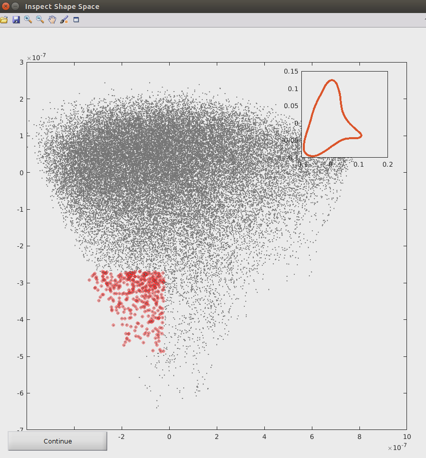

Inspect Shape Space
This allows looking at individual and groups of shapes in the embedded shape space.
Run 4-Shape_Averaging > InteractiveShapeSlicer.m, click on the folder icon in the InteractiveShapeSlicer window and select the Analysis folder. This will show a plot of grey dots in shape space.
The data brush (sixth icon from left in tool bar) permits you to select a sub group of shapes (dots) in shape space. To produce the average shape space, click on the ‘Continue’ buttom on the down left corner of the interface to generate the average shape of selected group of shapes with its respective coloured shape space at the top right corner (as demonstrated in the figure below).

Click on the save icon in the tool bar to save both figures (average shape and respective shape space). You will be asked for a folder and name for the file.